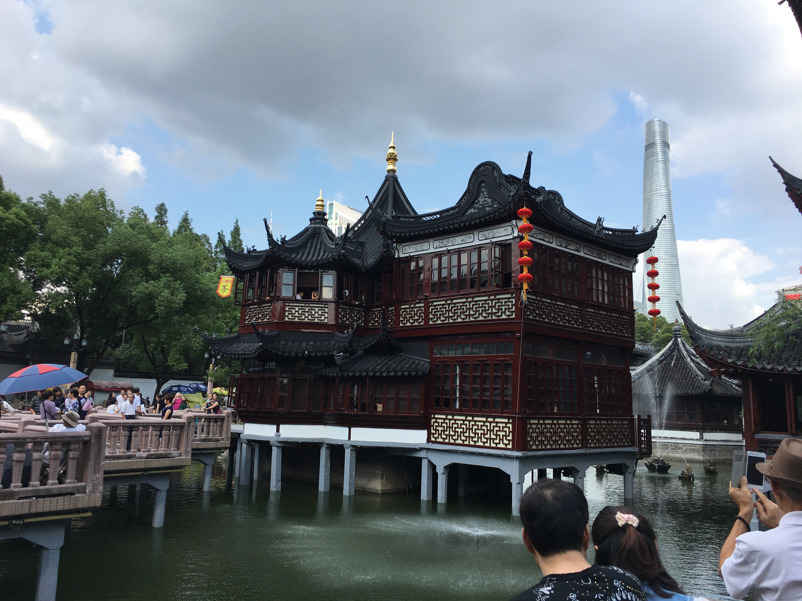

Tea Culture & History
This section gathers long-form features on Chinese tea history, institutions, ideas, and everyday life. The newest piece turns to the Guzhu Tribute Tea Yard and asks how Lu Yu, The Classic of Tea, and Tang tribute tea helped define an enduring idea of tea origins.

Why the Guzhu Tribute Tea Yard Matters Again
From Lu Yu and The Classic of Tea to Tang tribute tea and modern origin narratives, this feature follows tea into state order.

The Wanli Tea Road in renewed discussion
From Shanxi merchants and Kyakhta to world trade, a deep look at how tea traveled outward.

What younger generations are reviving after tea’s UNESCO recognition
How heritage language, tea life, and daily practice are being connected again.